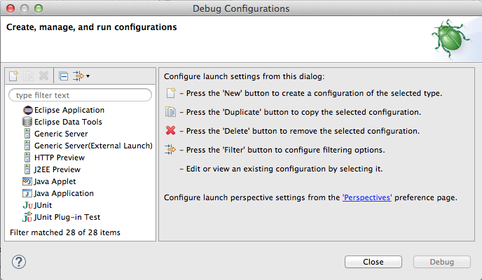
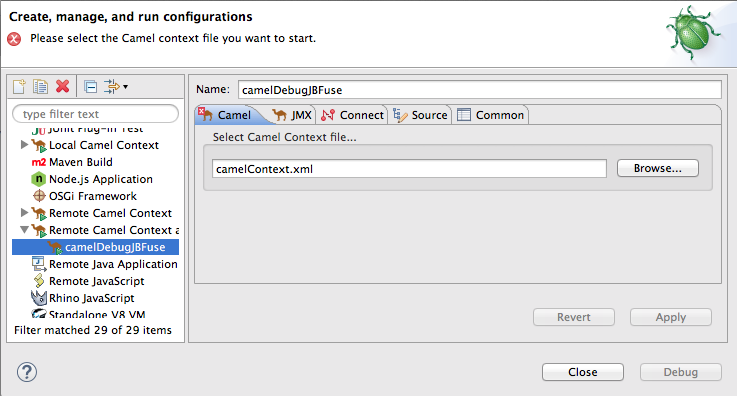
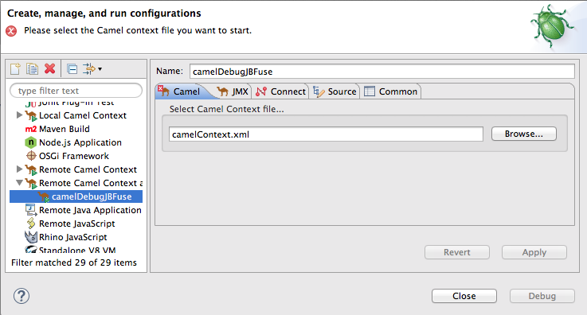
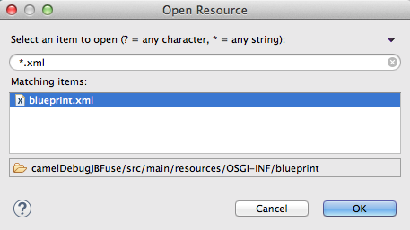
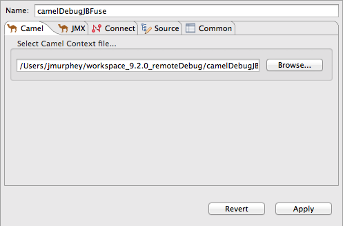
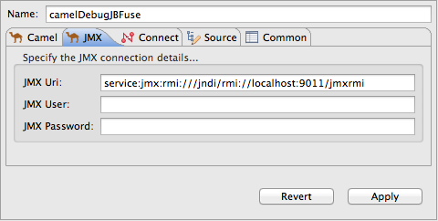
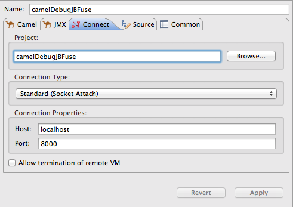
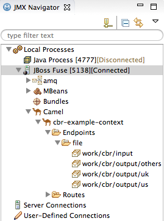
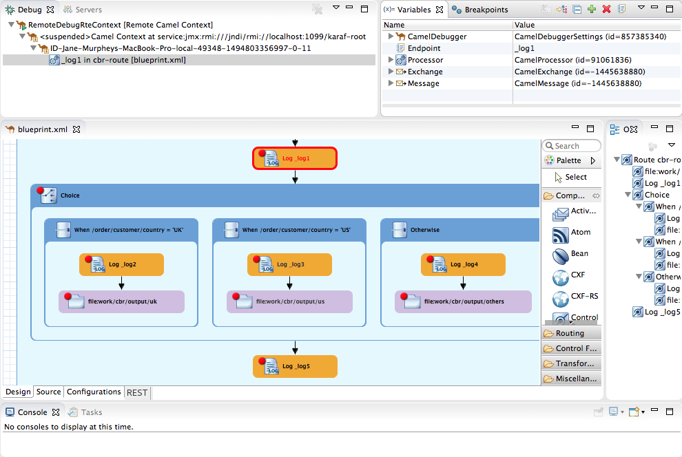

Have access to a JBoss Fuse runtime
Install a JBoss Fuse server on your local machine and edit its
[file to activate theFUSE_HOME]/etc/users.propertiesadminuser. For details, see Adding a Server.Have access to a JBoss Fuse server installed on a remote machine and know its connection details, including the credentials of the admin user.
Create a New Fuse Integration project (for details, see Configuring project basics)
Select the Camel version that matches the version of the JBoss Fuse server runtime.
Create an empty Blueprint DSL project or use one of the JBoss Fuse pre-defined templates with Blueprint DSL.
![[Note]](imagesdb/note.png)
Note Though not a requirement, it is a good idea to verify that you can run the project's routing context successfully as a . For details, see Running routes as a local Camel context.
Note The examples in Setting up and starting remote debugging are based on the > pre-defined template and a Red Hat JBoss Fuse 6.3.0 runtime.
In Red Hat JBoss Developer Studio,
Add the JBoss Fuse server to Servers view. For details, see Adding a Server.
Start the JBoss Fuse server. For details, see Starting a Server.
Publish your project to the JBoss Fuse Runtime server. For details, see Publishing Fuse projects automatically when resources change.
Note You cannot deploy a Fuse Integration project to a JBoss Fuse server running on a remote host from inside JBoss Developer Studio. Instead, you deploy the project's bundle directly on the remote host using one of two supported deployment methods (for details, see Deploying an OSGi Bundle).
Verify that the project's bundle is deployed and active. For details, see Verifying the project was published to the server.
Stop the JBoss Fuse Runtime server. For details, see Stopping a Server.
With the project deployed on JBoss Fuse and the server stopped, you need to set up and start remote debugging, which consists of these tasks:
Start up JBoss Fuse in debug mode outside of JBoss Developer Studio
In JBoss Developer Studio set breakpoints on nodes in the project's routing context, open in the route editor
Create a remote Camel context debug configuration and run it
Connect to JBoss Fuse runtime in JMX Navigator
Drop test messages in JMX Navigator on the input node of the Camel route running inside the JBoss Fuse runtime
Use any of the Camel debugger's tools for debugging routes.
To set up and start remote debugging:
Open a terminal outside of JBoss Developer Studio, and enter
$ [FUSE_HOME]/bin/fuse debug
Wait for the JBoss Fuse splash screen to appear, and then return to Fuse Integration perspective in JBoss Developer Studio.
In the project's routing context, open in the tooling's route editor, set breakpoints on the nodes of interest. For details, see Setting Breakpoints.
In Project Explorer, right-click the project's root and select > to open the Debug Configurations wizard:
In the configuration type pane, select either or , and then click
 :
:For both the and options, you need to specify configuration details on the Camel and JMX tabs.
For the option only, you also need to specify configuration details on the Connect tab.
Note Unless your project contains Java code that you want to debug using the standard Eclipse Java debugging tools, select the option.
Enter a name for the new launch configuration in the field.
On the Camel tab, click the button to locate the project's routing context
.XMLfile in the Open Resources dialog:Note When you select a file in the Matching items pane, the tooling displays the file's location relative to the project root, at the bottom of the pane.
In the Matching items pane, select your project's routing context file from the list, and then click .
The tooling inserts the file's path into the Select Camel Context file field:
Click the JMX tab:
Edit the JMX connection details this way:
JMX Uri—change
:9011/jmxrmito:1099/karaf-rootIf the JBoss Fuse server is running on a remote host, replace
localhostwith the DNS name or IP address of the remote host.JMX User—enter
adminJMX Password—enter
admin
![[Important]](imagesdb/important.png)
Important The values shown for JMX User and JMX Password are the JBoss Fuse admin user defaults, stored in the
[file. If your setup is different, enter the values specific to it.FUSE_HOME]/etc/users.propertiesIf you are creating a Remote Camel Context debug launch configuration, you are done. Skip to Step 11.
Click the Connect tab:
Change the Port value from
8000to5005Click and then click .
In JMX Navigator, double-click
JBoss Fuse [xxx] [Disconnected]to connect to it, and then expand its tree:In Project Explorer, drag a test message from
src/test/resources/dataand drop it on thecbr-example-context/Endpoints/file/work/cbr/inputfolder in JMX Navigator.When the message hits the first breakpoint set in the routing context, the tooling asks you to switch to Debug perspective:

Click Yes.
At this point, you can use any of the Camel debugger's tools to debug your routing context.
Note In remote debugging sessions, Console view does not display log output.
Note When one message reaches the end of the routing context, the debugger is suspended. To continue debugging, switch back to Fuse Integration perspective and drop another message on the input node in JMX Navigator. Each time you do so, the tooling asks you to confirm the switch to Debug perspective.